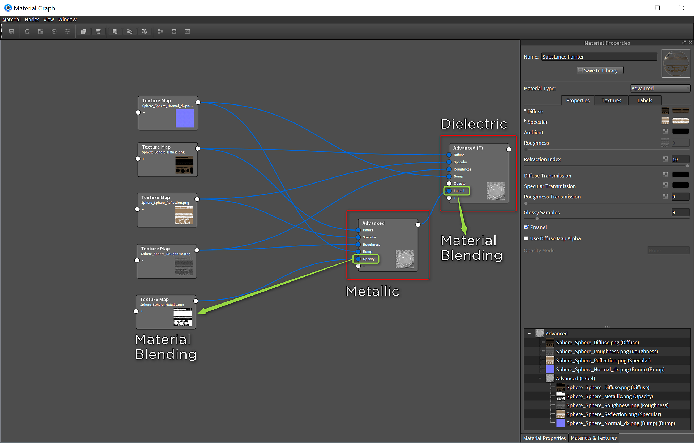

For Keyshot, you will need to configure an export preset using Diffuse, Reflection, Metallic, Roughness and Normal (direct X).
Keyshot
Keyshot 6.1.72
Download Example Scene
Substance Painter Export

Advanced Material Setup
You will use 2 advanced materials. One will be for metallic and the other will be for dielectric.
-
Set your material to Advanced and graph the material.
Metallic:
a. Set the Refraction Index to 10
b. Set the maps as indicated in the table belowSubstance Painter texture Advanced Material Channel Diffuse Diffuse Metallic Opacity Normal Bump *Normal Enabled Roughness Roughness Reflection Specular -
Create a new Advanced Material
Dielectric:
a. Set the Refraction Index to 1.5
b. Set the maps as indicated in the table belowSubstance Painter texture Advanced Material Channel Diffuse Diffuse Normal Bump *Normal Enabled Roughness Roughness Reflection Specular -
Take the output of the Metallic Advanced Material and add it to the + of the Dielectric Advanced Material. This will create a Label field on the material.
